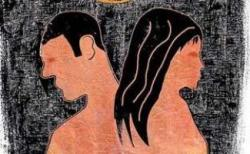

پذيرش > سایت نوشته ها > صعود آمار طلاق و طبقه متوسط / نعیمه دوستدار


 صعود آمار طلاق و طبقه متوسط / نعیمه دوستدار صعود آمار طلاق و طبقه متوسط / نعیمه دوستدار
20 خرداد 1391 - - نسخه قابل چاپ
اخباری که درباره طلاق در فضای رسانهای داخل ایران منتشر میشود، گاهی بیش از آن که جنبه اطلاعرسانی داشته باشد، محملی است برای بیان دیدگاههای انتقادی نسبت به طبقههای اجتماعی مختلف در داخل و حتی گاه خارج از ایران.
انتقادهای مطرح شده در بسیاری از موارد، بدون تکیه بر اصول علمی و تحلیلهای دقیق و تنها بر مبنای ایده و باورهای ایدئولوژیکی ابراز میشود که بر تفکر نظام سیاسی اجتماعی ایران حاکم است؛ ایدئولوژیای که تلاش میکند شکلهای و روشهای مختلف زندگی شهروندان را با برچسبهایی چون غربزدگی، فساد اخلاقی و بیاعتنایی به بنیان خانواده، از میدان به در کند.
در خبری که اوایل خرداد ماه سال ۱۳۹۱ درباره تصویب طرحی در شورای شهر تهران برای تحکیم بنیاد خانواده انتشار یافت، این رویکرد به شکل این فرضیه آماری منتشر شد که آمار طلاق در شمال شهر تهران بالاتر است و از هر سه ازدواج در منطقه شمیرانات، دو مورد به طلاق منتهی میشود.
طراحان این طرح در نظر داشتند با تصویب آن، مهارتهای زندگی مشترک زوجین قبل از ثبت ازدواج به آنها آموزش داده شود، با این تاکید که آمار ازدواج در سال ۹۰ نسبت به سال ۸۹ یک درصد رشد داشته، اما طلاق ۴/۳ درصد و در این میان تهران سرآمد بوده است.
یک فوریت طرح تحکیم بنیاد خانواده در شورای شهر تهران با وجود تلاشهای معصومه ابتکار و معصومه آباد رای نیاورد و با مخالفت پروین احمدینژاد و سایر اعضای شورای شهر تصویب نشد.
در حاشیه ارائه این طرح اما مسائلی قابل تامل مطرح شد. از جمله اینکه معصومه آباد، عضو شورای شهر تهران، بیکاری و مشکلات اقتصادی را دلیل افزایش طلاق ندانسته و به خبرگزاری ایلنا گفته است: "بر اساس آمار موجود از هر سه ازدواج در منطقه شمیرانات دو طلاق رخ میدهد. بنابراین مشکلات اقتصادی دلایل اصلی برای طلاق نیست چرا که در مناطق پایینتر از هر سه ازدواج یکی به طلاق ختم میشود."
پیشفرض این عضو شورای شهر تهران به نوعی بازتولید گفتمانی است که معضلات اجتماعی دوران مدرن را حاصل رفاه نسبی میداند و طبقه متوسط بهرهمند از این رفاه را مقصر اصلی قلمداد میکند.
اکثریت در اقلیت
دیدگاهی که طبقه متوسط شهرنشین را به حاشیه میراند، دیدگاه تازهای در جامعه ایران نیست. دست کم ۲۰ سال است که متولیان امور فرهنگی، علیه طبقه متوسط هدفگیری میکنند و در مقابل، به ارزشها و هنجارهای طبقات سنتی بها میدهند و آنها را به عنوان ارزشهای رسمی میپذیرند. سیاستهای فرهنگی حکومت ایران هم همواره این بوده است که این طبقه را کنترل کند تا از خطرهایی که از جانب آن احساس میکند دور بماند.
هرجا سخن از غربزگی، تهاجم فرهنگی، بحران هویت و ارزشهای ضد دینی هست، منظور ارزشهای طبقات متوسط است. با این نگاه، چندان غریب نیست که در بررسی آسیبهای گوناگون اجتماعی نظیر طلاق، اعتیاد و فحشا، بیش از آنکه به ریشههای اصلی و زمینهساز پرداخته شود، ویژگیهای یک طبقه اجتماعی هدف قرار بگیرد.
طبقه متوسط شهرنشین اما در ایران چه کسانی هستند؟ طبقه متوسط به معنای رایج و مرسوم آن در ایران، یک گروه سازمانیافته و یکپارچه نیست. منظور از آن طیفی از اقشار هستند که در برخی خصوصیات با هم مشترکند. این طبقه یکدست نیست و در آن از روشنفکران تا بازاریان و کارمندان دولتی وجود دارند. از نظر وضعیت اقتصادی هم هر چند نمیتوان این طبقه را صرفاً بر مبنای دارایی و ثروتشان سنجید، اما داشتههای مادی، تحصیلات و شغل افراد در نسبت آنها به عنوان طبقه متوسط اثر دارد. آنها قشر تازهای هستند از شهرنشینان، با شغلهای جدید، تحصیلات بالاتر و اثرپذیری از رسانههای جمعی.
با ظهور این طبقه در جامعه ایران، معمولاً چنین احساس شده که این طبقه جای نیروهای سنتی را گرفته و جامعهای جدید میسازد که برای بخش سنتی تهدیدکننده است.
جامعهشناسان معتقدند طبقه متوسط بیشتر با مفهوم مصرف و سبک زندگی توضیح داده میشود. با اینکه طبقه متوسط لزوماً غربگرا نیست، اما از آنجا که در سبک زندگی خود تعارضی با ارزشهای عام غربی نمیبیند و ارزشهای مدرن را میپسندد، از سمت سنتگرایان متهم به گرایش به غرب میشود.
طبقه متوسط در ایران، به دلیل جدید بودن و به دلیل اعتقاد به ارزشهایی که از دل آن بر آمده، در همه دورههای سیاسی پس از انقلاب به شکلهای مختلف متهم و سرکوب شده است. شاید بتوان این طبقه را با مفهوم اقلیت فرهنگی بهتر توصیف کرد. اقلیت در معنای جامعهشناسی آن، به گروه زیر سلطه اشاره دارد، اما بودن در اقلیت در اینجا به معنای کمتر بودن شمار افراد نیست. اقلیت فرهنگی معمولاً در ساختار قدرت، موقعیتی ضعیفتر دارد و به نوعی در کنار اقلیتهای قومی، مذهبی، جنسی و ... قرار میگیرد.
طبقه متوسط ایران، به دلیل حاکمیت نگاهی که برتری را به سنتها و ارزشهای مذهبی میدهد، به نوعی طبقه "شهروند درجه دوم" است. در رسانههای قدرتمند ایران به خصوص تلویزیون، گروهی که مورد حمله است و به عنوان مروج فرهنگ غرب و مصداق تهاجم فرهنگی معرفی میشود این طبقه است. نوع پوشش، افکار، سبک زندگی و همه چیز آن مورد انتقاد است. طبقه متوسط مصرفگرا تلقی میشود و چون مفهوم مصرفگرایی با امکان ایجاد دموکراسی، انتخاب و کثرتگرایی از دایره کنترل سنتگرایی خارج میشود، نظام سنتگرای ایران از آن میترسد.
این هراس را میتوان در انتخابات جنجالبرانگیز ریاستجمهوری سال ۱۳۸۸ در ایران نیز ردگیری کرد. پیش از این انتخابات و پس از آن، نیروهای اصلاحطلب که پایگاهشان در میان طبقه متوسط است، با شعار "مبارزه با اشرافیگری" به شدت توسط جریان سنتی به حاشیه رانده شدند. این در حالی است که به نظر میرسد طبقه متوسط اکثریت عددی جامعه ایران را تشکیل میدهد، اما قدرت در اختیار نهادهای وابسته به سنت است.
الگوی برتر، طبقه سنتی
در جامعه ایران، سبک زندگی طبقات پایین که معمولاً سنتی و مذهبی هستند، ترجیح داده میشود و رسانهها، زندگی گروههای مذهبی و سنتی را به عنوان الگوی برتر، تبلیغ و ترویج میکنند؛ رسانههایی که حکومت ایران، مردم را موظف و مجبور میکند مخاطب آنها باشند؛ به این صورت که مثلا با اجرای طرح جمعآوری آنتنهای ماهوارهای، گزینهها و انتخابهای دیگر را از بین میبرد.
تلاش برای ممانعت از گردش آزاد اطلاعات، راهکاری است برای حاکم نگهداشتن دیدگاههای سنتی در جامعه؛ چرا که در رسانههای غیر حکومتی شکلها و روشهای مختلف زندگی اجتماعی به نمایش گذاشته میشود که این مسئله با تلاش برای یکدست کردن مدل زندگی به نفع سنت در تعارض است.
از میان الگوهای سنتی که در رسانههای حکومتی تبلیغ میشود، یکی حفظ نظام خانواده به هر قیمت است. بر این الگو به شکلهای مختلف تاکید میشود و مخاطب این تاکید هم در بیشتر موارد زنان هستند.
آموزههای سنتی برآمده از مذهب از زنان میخواهند که- به عنوان نمونه- همسر معتاد و خیانتکار را که به اصطلاح معروف "دست بزن" هم دارد، به قیمت حفظ نظام خانواده تحمل کنند و اگر رشد آگاهی حاصل از بالا رفتن تحصیلات در طبقه متوسط، باعث اعتراض نسبت به این مسئله شود، صدای اعتراض جریانهای سنتگرا که تریبونها و رسانههای رسمی را در اختیار دارند بلند میشود. جالب اینکه در این الگوی حفظ خانواده، معمولاً خبری از سفارش تحمل چنین زنانی به مردان نیست و اگر مردی، زنی با چنین ویژگیهایی را تحمل کند، توسط همان طبقه سنتی به تمسخر گرفته میشود.
برای حفظ نظام خانواده روشهای ارشادی و تنبیهی و حتی تهدیدآمیز هم به کار گرفته میشود. بهعنوان مثال هر زمان خبر فعالیت گشتهای ارشاد مطرح میشود، پای بنیان خانواده هم وسط میآید و تاکید میشود که اگر زنان حجاب خود را در بیرون از خانه به بهترین شکل ممکن حفظ کنند، آنگاه مردها کمتر اغوا میشوند و به این ترتیب بنیان خانواده حفظ خواهد شد. تاکید بر حفظ حجاب و قرار گرفتن در تنها الگوی پذیرفته شده زندگی یعنی ازدواج، نمونههایی از روشهای نظام فرهنگی ایران برای حفظ نظام خانواده بر اساس تعریف سنت است.
بر اساس نگاه حاکم، طبقه سنتی، نظام خانواده را بیشتر حفظ میکنند و نشانه آن آمار کمتر طلاق در بین آنهاست، اما اینکه حفظ یک نظام بیمار - در اینجا خانوادهای که فشارهای مختلفی را به اعضای خود میآورد- چه هزینههایی دارد و چرا باید بر خواستههای فردی یک انسان تقدم داشته باشد، پرسشهایی است که معمولا بهغیر از پاسخهای سنتی، جواب قانعکنندهای برایشان وجود ندارد. در مقابل، این فرض که ممکن است بالارفتن آمار طلاق در میان طبقه متوسط به دلیل آگاهیهای اجتماعی، از جمله آشنایی بیشتر زنان با حقوق شانباشد، نادیده گرفته میشود و به دلایل اصلی طلاق که ممکن است حاصل ناآشنایی با مهارتهای زندگی امروز، مشکلات اقتصادی، مسایل جنسی، تفاوتهای فرهنگی- تربیتی و ... باشد، پرداخته نمیشود.
بهنظر میرسد حفظ نظام خانواده با تعریفهای سنتی خود در ایران، میتواند باعث حفظ سنتهایی شود که حاکمیت برآمده از آنهاست. سنتهایی که اگر به هر قیمتی حفظ شوند، مشروعیت حاکمیت نیز به هر قیمتی حفظ خواهد شد.
رادیو زمانه
ارسال به
بالاترین
،
توییتر
،
فریندفید
،
فیسبوک
در همين بخش :
 یک خبر تلخ؟ یک قانونشکنی؟ یک تصمیم بخشنامهای جدید؟ یک خبر تلخ؟ یک قانونشکنی؟ یک تصمیم بخشنامهای جدید؟
چرا بایست به سکسوالیته پرداخت؟ / نفیسه آزاد
آزارجنسی خانگی؛ «قربانی» نه، «نجات یافته»
زنان، بزرگترین بازندگان بهار عرب
سانسور از دیدگاه جنسیتی/الهه امانی
ديگر بخش ها :
طرح یک میلیون امضا
|
مقالات
|
سایت نوشته ها
|
اخبار
|
گزارش كمپين
|
گفت و گو
|
علیه سکوت
|
كوچه به كوچه
|
نامه های شما
|
گزارش ویژه
|
گفتگو با اعضا
|
ویژه سالگرد کمپین
|
تصویر برابری
|
دل آرام علی
|
تریبون
|
مقالات
|
تاریخ شفاهی
|
خارج از چارچوب
|
کتابخانه
|
درباره کمپین
|
کمپین در شهرها
|
کمپین در بند
|
صدای تغییر
|
ویژه 22 خرداد
|
لایحه حمایت از خانواده
|
گالری
|
عشا مومنی
|
امیر یعقوبعلی
|
خدیجه مقدم
|
راحله عسگری زاده و نسیم خسروی
|
پروین اردلان،جلوه جواهری، مریم حسین خواه، ناهید کشاورز
|
زینب پیغمبرزاده
|
سعیده امین، سارا ایمانیان، محبوبه حسین زاده، ناهید کشاورز و همایون نامی
|
احترام شادفر
|
نسیم سرابندی زاده،فاطمه دهدشتی
|
وبلاگ مهمان
|
پرونده خرم آباد
|
دستگیری ها
|
مریم مالک
|
پرستو اللهیاری
|
مهرنوش اعتمادی
|
سمیه رشیدی
|
Other Languages
|
همراهان
|
«فراخوان کمپین ده روز با بهاره هدایت»
| English
|